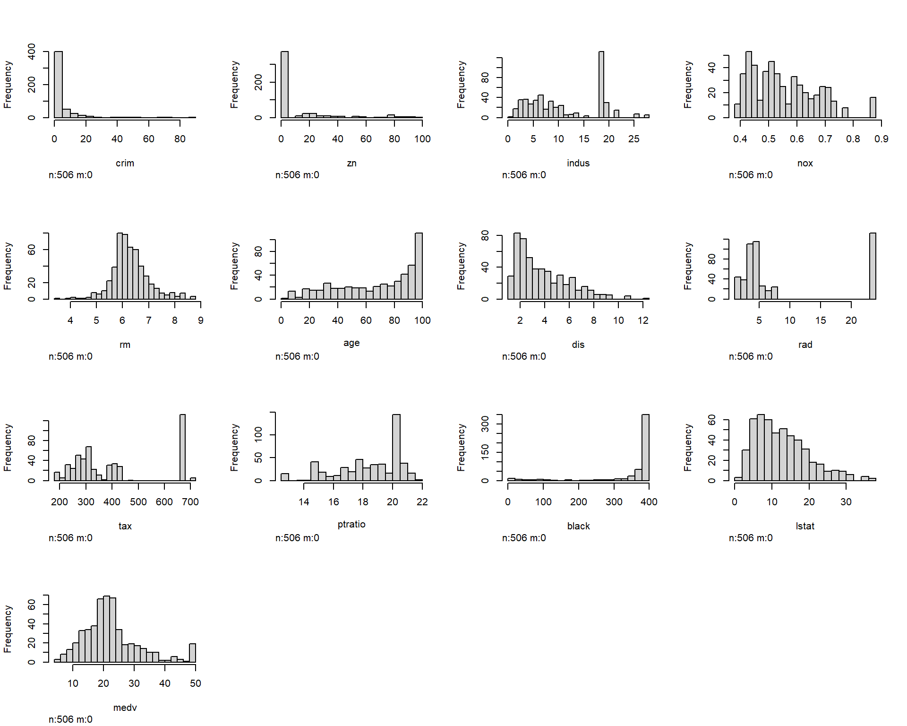
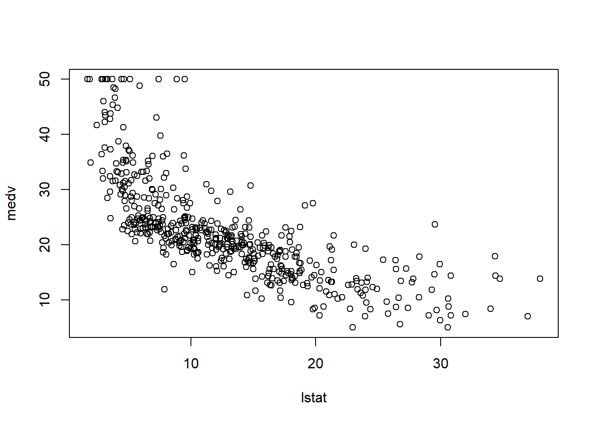
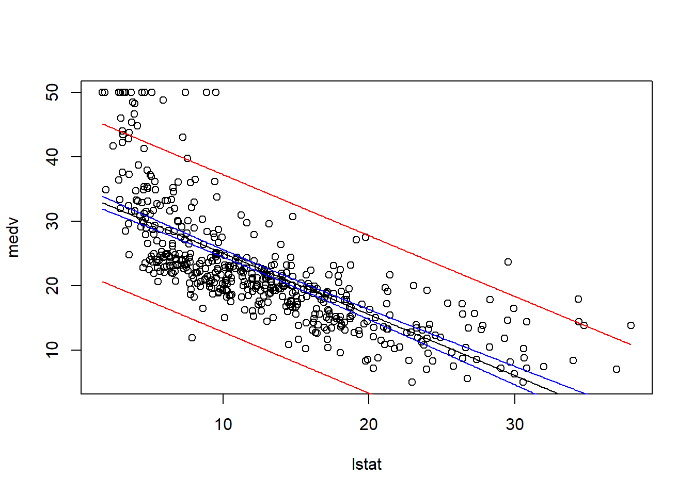
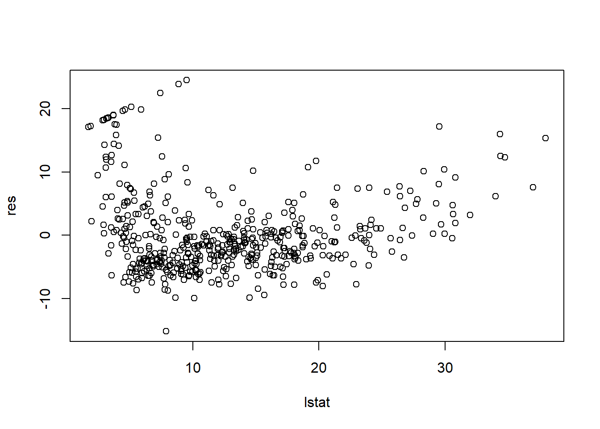

library(MASS)
head(Boston)
## crim zn indus chas nox rm age dis rad tax ptratio black lstat
## 1 0.00632 18 2.31 0 0.538 6.575 65.2 4.0900 1 296 15.3 396.90 4.98
## 2 0.02731 0 7.07 0 0.469 6.421 78.9 4.9671 2 242 17.8 396.90 9.14
## 3 0.02729 0 7.07 0 0.469 7.185 61.1 4.9671 2 242 17.8 392.83 4.03
## 4 0.03237 0 2.18 0 0.458 6.998 45.8 6.0622 3 222 18.7 394.63 2.94
## 5 0.06905 0 2.18 0 0.458 7.147 54.2 6.0622 3 222 18.7 396.90 5.33
## 6 0.02985 0 2.18 0 0.458 6.430 58.7 6.0622 3 222 18.7 394.12 5.21
## medv
## 1 24.0
## 2 21.6
## 3 34.7
## 4 33.4
## 5 36.2
## 6 28.7
names(Boston)
## [1] "crim" "zn" "indus" "chas" "nox" "rm" "age"
## [8] "dis" "rad" "tax" "ptratio" "black" "lstat" "medv"
dim(Boston)
## [1] 506 147 Example: SLR phase
7.1 The Boston Housing Dataset
The Boston housing dataset originates from a hedonic price analysis of 506 census tracts in the Boston Standard Metropolitan Statistical Area conducted by Harrison and Rubinfeld to estimate households’ willingness to pay for improvements in air quality, particularly reductions in nitrogen oxides (NOx) concentrations [1]. The data were assembled primarily from 1970 U.S. Census housing tabulations combined with modeled environmental pollution measures. Since its original publication, the dataset has been widely disseminated as the Boston dataset in econometrics, statistics, and machine learning, where it is commonly used to illustrate and evaluate linear regression methods. It was notably employed by Belsley, Kuh, and Welsch in Regression Diagnostics: Identifying Influential Data and Sources of Collinearity (pp. 244–261) [2] to demonstrate diagnostic techniques for detecting influential observations and multicollinearity, and has subsequently appeared in numerous methodological studies, including Quinlan’s work on combining instance-based and model-based learning [3].
In R, the MASS library contains Boston data set, which has 506 rows and 14 columns. The dataset records medv (median house value) and 13 predictors for 506 neighborhoods around Boston.
7.2 Explore the Boston Housing Dataset
First of all, let’s take a look at the variables in the dataset Boston.
names()— print out all the variable names;head()— print out the first 5 rows of the dataset;dim()— print out the shape of the dataset.
You may use ?Boston to look at the brief describption.
Since we would like to directly work with varibles in the dataset, it is better to attach it to the working space.
attach(Boston)7.2.1 Data Type
First we need to know the data type of every variable. Based on the information we have, we know
| Variable | Description | Type |
|---|---|---|
crim |
Per capita crime rate by town | Numerical, continuous |
zn |
Proportion of residential land zoned for lots over 25,000 sq.ft. | Numerical, continuous |
indus |
Proportion of non-retail business acres per town | Numerical, continuous |
chas |
Charles River dummy variable (1 if tract bounds river; 0 otherwise) | Categorical, nominal |
nox |
Nitrogen oxides concentration (parts per 10 million) | Numerical, continuous |
rm |
Average number of rooms per dwelling | Numerical, continuous |
age |
Proportion of owner-occupied units built prior to 1940 | Numerical, continuous |
dis |
Weighted mean distance to five Boston employment centers | Numerical, continuous |
rad |
Index of accessibility to radial highways (larger = better accessibility) | Categorical, ordinal |
tax |
Full-value property-tax rate per $10,000 | Numerical, continuous |
ptratio |
Pupil–teacher ratio by town | Numerical, continuous |
black |
\(1000(B_k - 0.63)^2\), where \(B_k\) is the proportion of Black residents | Numerical, continuous |
lstat |
Percentage of lower-status population | Numerical, continuous |
medv |
Median value of owner-occupied homes (in $1,000s) | Numerical, continuous |
7.2.2 Summary of all the variables
Usually we would like to check two things: the distribution of each variable, and finding all missing values.
Are there any missing values?
sapply(Boston, anyNA)
## crim zn indus chas nox rm age dis rad tax
## FALSE FALSE FALSE FALSE FALSE FALSE FALSE FALSE FALSE FALSE
## ptratio black lstat medv
## FALSE FALSE FALSE FALSEFrom the output, we know there is no missing values in the Boston dataset.
Next, we find the summary of all the 13 variables as follows. These summary shows a brief glance of the distributions of all variables.
summary(Boston)
## crim zn indus chas
## Min. : 0.00632 Min. : 0.00 Min. : 0.46 Min. :0.00000
## 1st Qu.: 0.08205 1st Qu.: 0.00 1st Qu.: 5.19 1st Qu.:0.00000
## Median : 0.25651 Median : 0.00 Median : 9.69 Median :0.00000
## Mean : 3.61352 Mean : 11.36 Mean :11.14 Mean :0.06917
## 3rd Qu.: 3.67708 3rd Qu.: 12.50 3rd Qu.:18.10 3rd Qu.:0.00000
## Max. :88.97620 Max. :100.00 Max. :27.74 Max. :1.00000
## nox rm age dis
## Min. :0.3850 Min. :3.561 Min. : 2.90 Min. : 1.130
## 1st Qu.:0.4490 1st Qu.:5.886 1st Qu.: 45.02 1st Qu.: 2.100
## Median :0.5380 Median :6.208 Median : 77.50 Median : 3.207
## Mean :0.5547 Mean :6.285 Mean : 68.57 Mean : 3.795
## 3rd Qu.:0.6240 3rd Qu.:6.623 3rd Qu.: 94.08 3rd Qu.: 5.188
## Max. :0.8710 Max. :8.780 Max. :100.00 Max. :12.127
## rad tax ptratio black
## Min. : 1.000 Min. :187.0 Min. :12.60 Min. : 0.32
## 1st Qu.: 4.000 1st Qu.:279.0 1st Qu.:17.40 1st Qu.:375.38
## Median : 5.000 Median :330.0 Median :19.05 Median :391.44
## Mean : 9.549 Mean :408.2 Mean :18.46 Mean :356.67
## 3rd Qu.:24.000 3rd Qu.:666.0 3rd Qu.:20.20 3rd Qu.:396.23
## Max. :24.000 Max. :711.0 Max. :22.00 Max. :396.90
## lstat medv
## Min. : 1.73 Min. : 5.00
## 1st Qu.: 6.95 1st Qu.:17.02
## Median :11.36 Median :21.20
## Mean :12.65 Mean :22.53
## 3rd Qu.:16.95 3rd Qu.:25.00
## Max. :37.97 Max. :50.00Note that chas and rad are supposed to be categorical data. In this summary they are still treated as numerical. Therefore we could change their type if necessary.
chas <- factor(chas)
rad <- factor(rad)
summary(Boston)
## crim zn indus chas
## Min. : 0.00632 Min. : 0.00 Min. : 0.46 Min. :0.00000
## 1st Qu.: 0.08205 1st Qu.: 0.00 1st Qu.: 5.19 1st Qu.:0.00000
## Median : 0.25651 Median : 0.00 Median : 9.69 Median :0.00000
## Mean : 3.61352 Mean : 11.36 Mean :11.14 Mean :0.06917
## 3rd Qu.: 3.67708 3rd Qu.: 12.50 3rd Qu.:18.10 3rd Qu.:0.00000
## Max. :88.97620 Max. :100.00 Max. :27.74 Max. :1.00000
## nox rm age dis
## Min. :0.3850 Min. :3.561 Min. : 2.90 Min. : 1.130
## 1st Qu.:0.4490 1st Qu.:5.886 1st Qu.: 45.02 1st Qu.: 2.100
## Median :0.5380 Median :6.208 Median : 77.50 Median : 3.207
## Mean :0.5547 Mean :6.285 Mean : 68.57 Mean : 3.795
## 3rd Qu.:0.6240 3rd Qu.:6.623 3rd Qu.: 94.08 3rd Qu.: 5.188
## Max. :0.8710 Max. :8.780 Max. :100.00 Max. :12.127
## rad tax ptratio black
## Min. : 1.000 Min. :187.0 Min. :12.60 Min. : 0.32
## 1st Qu.: 4.000 1st Qu.:279.0 1st Qu.:17.40 1st Qu.:375.38
## Median : 5.000 Median :330.0 Median :19.05 Median :391.44
## Mean : 9.549 Mean :408.2 Mean :18.46 Mean :356.67
## 3rd Qu.:24.000 3rd Qu.:666.0 3rd Qu.:20.20 3rd Qu.:396.23
## Max. :24.000 Max. :711.0 Max. :22.00 Max. :396.90
## lstat medv
## Min. : 1.73 Min. : 5.00
## 1st Qu.: 6.95 1st Qu.:17.02
## Median :11.36 Median :21.20
## Mean :12.65 Mean :22.53
## 3rd Qu.:16.95 3rd Qu.:25.00
## Max. :37.97 Max. :50.007.2.3 Histogram
We could draw histogram for a particular variable, say medv.
hist(medv)
We could also draw all the histogram for all numerical variables in the data frame Boston with the help of `Hmisc::hist.data.frame. Note that categorical data are automatically removed.
library(Hmisc)
hist.data.frame(Boston)
7.2.4 Scatter plot
Finally, the most import plot for regression should be the scatter plot. For example, let us see the relation between lstat and medv.
plot(lstat, medv)
7.3 Simple Linear Regression
We will seek to predict medv using 13 predictors such as rm (average number of rooms per house), age (proportion of the owner-occupied units built prior to 1940), or lstat (percent of households with low socioeconomic status).
7.3.1 Find a strongest linear correlation
In general there has to be a more complicated analysis about choosing the best variable. In this case in order to demonstrate the idea, we will only use the most correlted numerical variable.
Here, we use corrlation matrix to find the independent variable which has the strongest linear correlation to the dependent variable.
We first find out the numeric columns.
Boston_num <- Boston[, sapply(Boston, is.numeric)] Then we compute the corrlation matrix. We would like to find the column that is most correlated to medv. We find that lstat and medv has the strongest linear correlation.
cor_matrix <- cor(Boston_num)
round(cor_matrix, 2)
## crim zn indus chas nox rm age dis rad tax ptratio
## crim 1.00 -0.20 0.41 -0.06 0.42 -0.22 0.35 -0.38 0.63 0.58 0.29
## zn -0.20 1.00 -0.53 -0.04 -0.52 0.31 -0.57 0.66 -0.31 -0.31 -0.39
## indus 0.41 -0.53 1.00 0.06 0.76 -0.39 0.64 -0.71 0.60 0.72 0.38
## chas -0.06 -0.04 0.06 1.00 0.09 0.09 0.09 -0.10 -0.01 -0.04 -0.12
## nox 0.42 -0.52 0.76 0.09 1.00 -0.30 0.73 -0.77 0.61 0.67 0.19
## rm -0.22 0.31 -0.39 0.09 -0.30 1.00 -0.24 0.21 -0.21 -0.29 -0.36
## age 0.35 -0.57 0.64 0.09 0.73 -0.24 1.00 -0.75 0.46 0.51 0.26
## dis -0.38 0.66 -0.71 -0.10 -0.77 0.21 -0.75 1.00 -0.49 -0.53 -0.23
## rad 0.63 -0.31 0.60 -0.01 0.61 -0.21 0.46 -0.49 1.00 0.91 0.46
## tax 0.58 -0.31 0.72 -0.04 0.67 -0.29 0.51 -0.53 0.91 1.00 0.46
## ptratio 0.29 -0.39 0.38 -0.12 0.19 -0.36 0.26 -0.23 0.46 0.46 1.00
## black -0.39 0.18 -0.36 0.05 -0.38 0.13 -0.27 0.29 -0.44 -0.44 -0.18
## lstat 0.46 -0.41 0.60 -0.05 0.59 -0.61 0.60 -0.50 0.49 0.54 0.37
## medv -0.39 0.36 -0.48 0.18 -0.43 0.70 -0.38 0.25 -0.38 -0.47 -0.51
## black lstat medv
## crim -0.39 0.46 -0.39
## zn 0.18 -0.41 0.36
## indus -0.36 0.60 -0.48
## chas 0.05 -0.05 0.18
## nox -0.38 0.59 -0.43
## rm 0.13 -0.61 0.70
## age -0.27 0.60 -0.38
## dis 0.29 -0.50 0.25
## rad -0.44 0.49 -0.38
## tax -0.44 0.54 -0.47
## ptratio -0.18 0.37 -0.51
## black 1.00 -0.37 0.33
## lstat -0.37 1.00 -0.74
## medv 0.33 -0.74 1.00The matrix can be visualized. lstat is also the most obvious choice from the plot.
library(ggcorrplot)
ggcorrplot(cor_matrix, hc.order = TRUE)
For the next step, we will explore the linear relationship between the two variables. That is, \(y\)=medv, \(x\)=lstat.
plot(lstat, medv)
The data appears to demostrate a straight-line relationshiop. As the percentage of lower status of the population (lstat) increase, the median home value decrease, which fits with common sense. The scatterplot shows curvilinear relation, which suggests a curivilinear model might be a better fit. In this chapter, we fit the straight-line model using lm.
Here is a quick glance about how lm works.
model <- lm(medv ~ lstat, data = Boston)
model
##
## Call:
## lm(formula = medv ~ lstat, data = Boston)
##
## Coefficients:
## (Intercept) lstat
## 34.55 -0.95
coef(model)
## (Intercept) lstat
## 34.5538409 -0.9500494The estimated regression equation by using least squares method is \(\hat{y}\)=34.5538409\(+\)(-0.9500494)\(x\).
7.3.2 Test of model utility
We would like to see the output of the model.
anova_alt(model)
## Analysis of Variance Table
##
## Df SS MS F P
## Source 1 23244 23243.9 601.62 5.0811e-88
## Error 504 19472 38.6
## Total 505 42716
summary(model)
##
## Call:
## lm(formula = medv ~ lstat, data = Boston)
##
## Residuals:
## Min 1Q Median 3Q Max
## -15.168 -3.990 -1.318 2.034 24.500
##
## Coefficients:
## Estimate Std. Error t value Pr(>|t|)
## (Intercept) 34.55384 0.56263 61.41 <2e-16 ***
## lstat -0.95005 0.03873 -24.53 <2e-16 ***
## ---
## Signif. codes: 0 '***' 0.001 '**' 0.01 '*' 0.05 '.' 0.1 ' ' 1
##
## Residual standard error: 6.216 on 504 degrees of freedom
## Multiple R-squared: 0.5441, Adjusted R-squared: 0.5432
## F-statistic: 601.6 on 1 and 504 DF, p-value: < 2.2e-16Let us check the confidence interval for \(\beta_1\).
# Combine to display the coef and confidence interval for the parameters together;
coef <- coefficients(summary(model))
coef_CI <- confint(model, level = 0.95)
cbind(coef, coef_CI)
## Estimate Std. Error t value Pr(>|t|) 2.5 % 97.5 %
## (Intercept) 34.5538409 0.56262735 61.41515 3.743081e-236 33.448457 35.6592247
## lstat -0.9500494 0.03873342 -24.52790 5.081103e-88 -1.026148 -0.8739505- Significance: We test the \(H_0:\beta_1=0\) vs \(H_a: \beta_1\neq 0\). For simple linear regression, the result would be the same as the correlation hypothesis test above. We will conclude percentage of lower status (
lstat) is a significant predictor to the median house price (medv). - CI for \(\beta_1\): The confidence interval for slope \(\beta_1\) is (-1.0261482, -0.8739505). We are 95% confident that the mean median home price decreases around 0.874 to 1.026 thousands of dollors per additional percent increase in low-status of the population.
- sd for \(\beta_1\): The estimated standard deviation of \(\varepsilon\) is \(s\)=6.2157604, which implies that most of the observed median home price will fall within in approximately \(2s\)=12.4 thousands of dollars of their respective predicted values when using the least squares line.
- \(R^2\): The coefficient of determination is 0.544. This value implies that about 54% of the sample variation in median home price is explained by the low-status percent and the median home price. However, as we note that \(R^2\) is not very high, we need to modify our model in the future.
- Prediction: With relatively small \(2s\), significant linear relationship between
lstatandmedv, we could get confidence interval and prediction interval as follows.
plot(lstat, medv)
newx <- data.frame(lstat = seq(min(lstat), max(lstat), by = 0.1))
pred.int <- predict(model, newx, interval = "prediction")
conf.int <- predict(model, newx, interval = "confidence")
lines(newx$lstat, pred.int[, "fit"])
lines(newx$lstat, pred.int[, "lwr"], col = "red")
lines(newx$lstat, pred.int[, "upr"], col = "red")
lines(newx$lstat, conf.int[, "lwr"], col = "blue")
lines(newx$lstat, conf.int[, "upr"], col = "blue")
7.3.3 Residual Analysis
The detailed residual analysis will be covered in the future. Here we only show the very basic analysis, that is the plot of the residual vs the predictor variable lstat.
res <- resid(model)
plot(lstat, res)
We could find that there is a clear u-shape in the residual plot. And the variance shows non-constant variance issue, as the size of the residuals decreases as the value of lstat increase. This residual plot indicates that a multiplicative model may be appropriate.